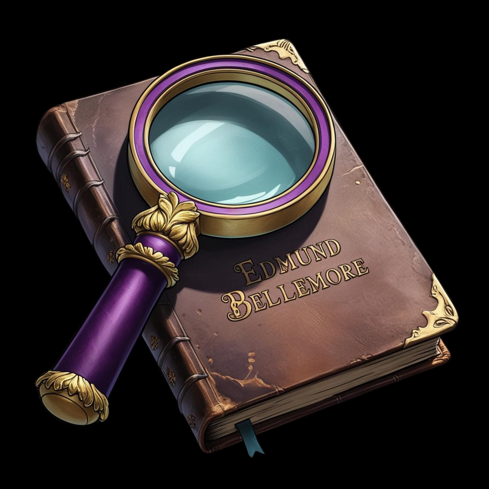

In this game of mystery and deceit, you are a skilled art detective summoned to investigate the high-profile disappearance of the famed painting, The Midnight Sonata, from the prestigious Bellemore Museum. As the investigation begins, you quickly realize that the missing artwork is just the tip of the iceberg.
Founded in 1853 by the enigmatic Edmund Bellemore, the museum has always been a place of cultural reverence, housing priceless works of art and rare artifacts. But beneath its grand halls and checkerboard floors lies something far more sinister, a web of secrets stretching back to its very foundation. As you dig deeper, you will discover strange disappearances. Unexplained gaps in history. A pattern of stolen artwork that no one has dared to question...until now.
Every gallery holds cryptic clues hidden within the exhibits, while forgotten letters and long-lost artifacts seem to point to a conspiracy dating back to the museum’s inception. The theft of The Midnight Sonata may be more than a simple crime, it could be the final piece of a much larger, shadowy puzzle, and it’s up to you to solve it.

Step into a world where art is more than just beauty...it's a key to unlocking a dark mystery.

As you explore the museum’s opulent galleries and shadowy archives, every exhibit, every artifact, every cryptic letter you uncover pulls you deeper into a mystery centuries in the making. What really happened to Edmund Bellemore after his sudden disappearance in 1892? Why have valuable paintings been vanishing for decades? And how is The Midnight Sonata connected to a secret someone has gone to great lengths to keep hidden?
If you’re fascinated by history, art, and thrilling mysteries, this game will challenge your intellect and curiosity. Every clue you discover brings you closer to understanding why The Midnight Sonata vanished and what it has to do with the haunting secrets that the museum’s founder never wanted to be uncovered.